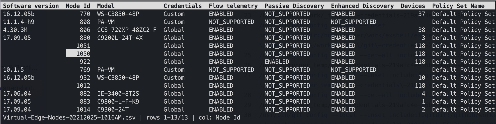

Open a .csv or .xlsx file where you already are. Aligned columns, real dates, the right delimiter — and a scrolling viewer that appears only when the data won't fit.

The interactive viewer. Status bar shows the file, your position, and the current column — / to search, Tab to change sheet, q to quit.
A viewer for tabular data — not a spreadsheet. Everything here exists to get a file onto your screen correctly, and then get out of the way.
Excel workbooks open without Excel. Switch sheets with Tab, or name one up front with --sheet. Hidden sheets are reachable too, marked rather than skipped.
Spreadsheets store dates as serial numbers. exshell reads the format-applied value, so a date cell shows the date Excel shows — same for currency and percentages.
Comma, semicolon, tab or pipe — detected by parsing candidates and scoring them, not by counting bytes. That semicolon export from a European Excel just opens.
Redirect it and you get plain aligned text on stdout. grep, head, less -S and friends all work, because the print path never assumes a terminal.
Ten rows print straight to your scrollback where you can still scroll back to them. A hundred thousand rows opens the full-screen viewer. Override either way with -p or -i.
No runtime, no interpreter, no dependencies. Packages for Homebrew, apt and dnf; the macOS build is a signed, notarized universal binary that Gatekeeper accepts silently.
Not for lack of trying — a CSV is a deceptively hard format, and none of the standard tools were built to parse one.
$ column -t -s, contacts.csv
name note email
Ada Lovelace "Analytical Engine, 1843" ada@…
Alan Turing "Bletchley Park, 1939" alan@…
A quoted field containing a comma is split anyway — the row shifts, and every column after it is wrong. column splits on bytes; it has no idea what a quote means.
$ exshell contacts.csv name note email Ada Lovelace Analytical Engine, 1843 ada@… Alan Turing Bletchley Park, 1939 alan@…
The quoted comma stays inside its field, where it belongs. Ragged rows, embedded newlines and BOMs are handled the same way — quietly, and correctly.
$ cat export.csv Naam;Datum;Bedrag Vermeer;45291;1234,56 Rembrandt;45292;987,65
Semicolons because the file came from a European Excel. Serial numbers because that is how a spreadsheet stores a date. Neither is readable, and .xlsx is not readable at all.
$ exshell export.csv Naam Datum Bedrag Vermeer 2024-01-15 1234,56 Rembrandt 2024-01-16 987,65
Delimiter sniffed, dates rendered as dates, numeric columns right-aligned. No flags — though --delim, --encoding and --no-header are there when a file needs them.
Signed packages from a signed repository. Pick your platform.
$ brew tap vanlabeke/tap $ brew trust --formula vanlabeke/tap/exshell $ brew install exshell
Homebrew 6 asks you to trust anything from a tap outside homebrew-core, formulae included — it is asking whether you vouch for a third party running its own install code. A fair question, and worth answering deliberately.
The macOS build is a universal binary (Apple Silicon and Intel in one file), code-signed with a Developer ID and notarized by Apple, so it runs without a Gatekeeper warning.
$ sudo install -d /etc/apt/keyrings $ curl -fsSL https://pkg.vanlabeke.dev/apt/gpg.key \ | sudo tee /etc/apt/keyrings/vanlabeke.asc > /dev/null $ echo "deb [signed-by=/etc/apt/keyrings/vanlabeke.asc] \ https://pkg.vanlabeke.dev/apt stable main" \ | sudo tee /etc/apt/sources.list.d/vanlabeke.list $ sudo apt update && sudo apt install exshell
amd64 and arm64. The repository metadata is GPG-signed and the packages are signed individually, so apt verifies both.
$ sudo curl -fsSL -o /etc/yum.repos.d/vanlabeke.repo \ https://pkg.vanlabeke.dev/yum/vanlabeke.repo $ sudo dnf install exshell
x86_64 and aarch64, with gpgcheck and repo_gpgcheck both on. Release candidates never enter this channel — only stable tags are published here.
# FreeBSD, OpenBSD and NetBSD — amd64 and arm64 $ curl -fsSLO https://github.com/vanlabeke/exshell/releases/latest/\ download/exshell_<version>_freebsd_amd64.tar.gz $ tar xzf exshell_*.tar.gz $ sudo install -m 0755 exshell /usr/local/bin/
No native port yet. Submitting to a ports tree means a human doing it, which is not something a release pipeline can do on its own — so for now it is the tarball from the releases page.
$ git clone https://github.com/vanlabeke/exshell $ cd exshell $ make install # -> /usr/local/bin # or somewhere you already own — no sudo at all $ make install PREFIX=$HOME/.local
Requires Go 1.26 or later. Run it as plain make install, not sudo make install — under sudo the build itself runs as root and leaves root-owned files in your module cache, which breaks later builds as yourself. Only the copy into /usr/local/bin needs elevation, and it will ask.
Vim motions where you'd expect them, arrows where you wouldn't. Press ? in the viewer for the same list without leaving the terminal.
exshell is a viewer. There is no editing, no formulas, no sorting and no filtering — it shows you what is in the file, and changing the file is someone else's job. Sorting is sort; filtering is grep; both already work, because the output pipes.
The whole file is held in memory, which is right for the exports people actually email around and wrong for a multi-gigabyte log. Merged cells show their value only in the top-left cell, because that is genuinely where the file stores it. The viewer is keyboard-only. These are choices, and they are written down rather than discovered.
Free and open source under the BSD 3-Clause license.